<<2014年2月 | トップページ |
2014年3月
【お知らせとご挨拶】大天才テレビジョン会長
皆様、こんにちは。大天才テレビジョン会長です。
今日はちょっと残念なお知らせがあります。
大天才テレビジョンはネオ渋谷区から「大！天才てれびくん」を放送していますが、この度、私たちの放送電波は「ネオ」のつかない世界に届かなくなってしまいました。
私は早速、大天才テレビジョン放送技術研究所略して大放研のふかわ主任に調査を命じました。ところが、「きっと星のめぐりがよくないのでしょうね。何か都合悪かったですか？」などと科学者とも思えぬとんちんかんなことを言っているばかりで、原因は不明です。
行方をくらましたままの編成局長、あるいは会社を逆恨みしている何とか大魔王が懲りずに何かたくらんでいるのかも知れませんが、確実な情報は何もありません。
これまで3年間、出川哲朗特命プロデューサーとてれび戦士たちは、長寿番組のよさを生かしながらもまったく新しい「天才てれびくん」を創り出そうと、「大！天才てれびくん」の制作に取り組んできました。
「天才てれびくんタロウ」の方が好きだったとか、「タロウ」に戻してほしいというご意見も数多くいただきましたが、出川Pは自らの信念たる「出川イズム」を揺るがせることなく、不器用ながらもまっすぐ真剣に邁進しました。これまでとはまた別の形で皆様に愛していただける番組となったのではないかと思います。
「天才てれびくん」シリーズは、常に新しいことに挑戦し続けることを運命づけられた番組です。全放送清く正しく美しく好感度向上委員会略して全放向のような団体や、時折来訪する謎のUFOや怪人物たちのちょっかいに負けることなく、てれび戦士たちは魅力的で新しい豊かな放送番組を今後も創造していくことでしょう。
ネオのつかない世界の皆様。電波は途切れてしまいましたが、いつかまたお会いできる日が来るかもしれません。そのときはまた、あたたかい応援をお願いします。
ああ、そろそろネオのつかないインターネットへの接続も切れそうです。
おなごり惜しいですが、このあたりで一旦お別れです。
テレビって本当にいいものですね。サヨナラ、サヨナラ、サヨナラ。
2014年3月27日
第19代 大天才テレビジョン 会長
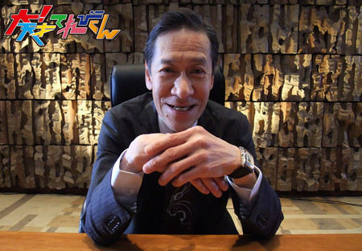
追伸：ネオのつかない渋谷区にあるNHKという放送局が、3月31日から「Let’s天才てれびくん」という番組をどうやら始めるみたいですよ。こちらもまた別の魅力を持つ、新しい「天才てれびくん」だと思います。大天才テレビジョンの番組ではありませんが、よかったら観てあげてくださいね。
投稿者:大天才テレビジョン社員１号 | 投稿時間:19時00分 | カテゴリ：お知らせ！ | 固定リンク


 " title="ソーシャルブックマークについて">
" title="ソーシャルブックマークについて">
※NHKサイトを離れます。
【私と「大！天才てれびくん」】出川哲朗
★私と「大！天才てれびくん」★
本当に楽しい3年間だった
あきえちゃんと22人のてれび戦士
みんなで、たくさん笑ってたくさん泣いた
みんなで、ご飯も食べに行った
みんなで、ボスの家にも遊びに来た
みんなに、本気で怒った
本当に素晴らしいチームだった
この22人のてれび戦士に出会えたことを、誇りに思う
そして、俺はこれからもこのてれび戦士を見守り続ける
3年間、大！天才てれびくんを応援してくれてありがとう
2011年
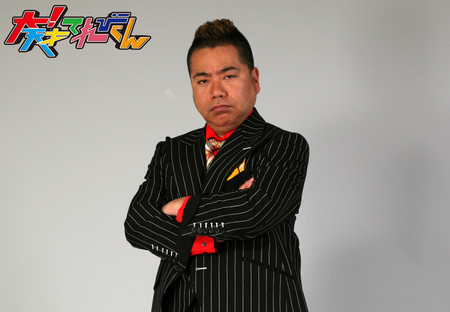


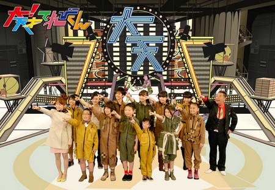
2012年

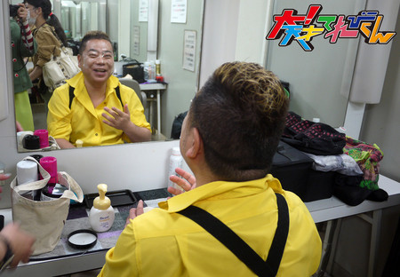

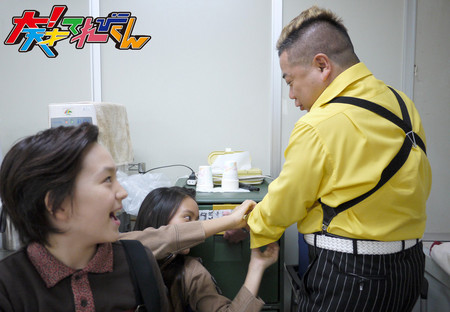

2013年

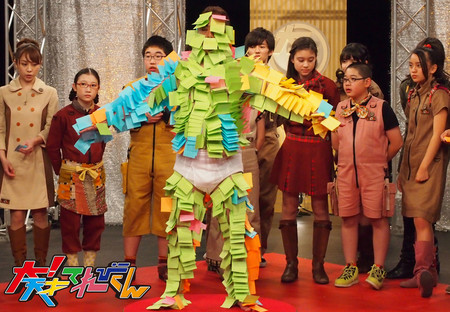

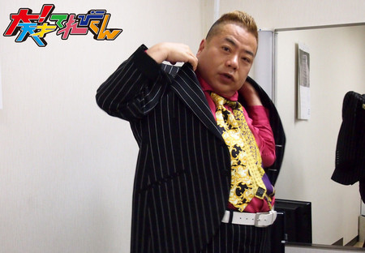

投稿者:出川哲朗 | 投稿時間:18時00分 | カテゴリ：We are 大天才テレビジョン | 固定リンク
" title="ソーシャルブックマークについて">
※NHKサイトを離れます。
【私と「大！天才てれびくん」】鈴木あきえ
★私と「大！天才てれびくん」★
「大！天才てれびくん」を暖かく見守って下さったみなさま、
今までどうもありがとうございました☆
私も小学生の頃は、根っからの天才てれびくんっ子だったので、
大！天のお仕事をさせていただけるのが決まったとき
飛び上がるほど嬉しかったのを覚えています(^^)
それに、子供番組をするとぃうのが夢の1つだったので
自分でも信じられないくらいの喜びでした♪♪
しかし、最初の収録では
何故かみんなで海辺を走ったり、
東京タワーに登って番宣をしたり、
一体これは何なんだろう？とぃう疑問がたくさんありました（笑）
そう！
それが出川イズムだったのです！！！
どんなことでも、例え意味がないことでも、何事も全力でやる！！！
出川イズムは、私のこれからの人生にも大きな影響を与えてくれました♪
てれび戦士たちといると、いつもいつも楽しくて、
時には辛いスケジュールのときも、みんながいたから頑張れる自分がいました☆
彼らはまだ学生だけど、
本当にプロだなと感心させられたことも何度もありました！
26歳の私の方が子供だなと反省したこともしばしばΣ ゜ロ゜≡( ノ)ノ
彼らは本当に、最高の私の自慢の仲間です♪
ボスやてれび戦士、大！天スタッフのみんなと出逢えて
何事も全力で楽しんでやることの大切さを知りました(^^)
みんな、どうもありがとう♪
ここまで、歳の離れたマブダチができるとは思っていなかったけど（笑）、
人生の中で最高の3年間だったし、
一生忘れない、キラキラした日々でした☆
みんなとは、大人になったら一緒にお酒を飲みに行く約束をしてます(^^)
あ、そのとき、まだ私が独身だったら、しっかり合コンも一緒に行かないと♪♪笑
『大！天才てれびくん』メンバー☆
そして
『大！天才てれびくん』を愛してくれたみなさま☆
心の底からありがとうございました♪♪♪
2011年


2012年
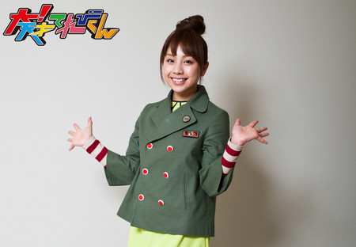

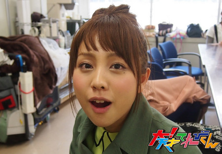
2013年
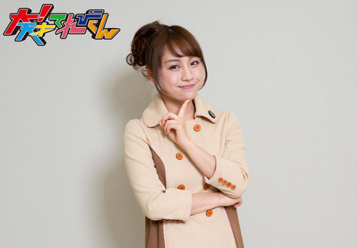


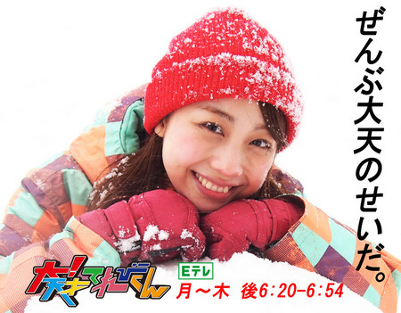
投稿者:鈴木あきえ | 投稿時間:18時00分 | カテゴリ：We are 大天才テレビジョン | 固定リンク
" title="ソーシャルブックマークについて">
※NHKサイトを離れます。
【私と「大！天才てれびくん」】古坂大魔王
★ワルがワルしてワルするワルと「大！天才てれびくん！」★
ぐわははは！お前の布団の中に竜田揚げ置いてやる！
どうも！フダケリワルズ監督古坂大魔王だ！
なに？…終わる？なに？大！天才てれびくん…終わる？
なんだとぉ((((；゜Д゜)))))))！
この三年間の感想…ふむ、まあよい！述べようではないか！
…最初は札式蹴り野球のコーナーだったな…。
太一が最初のてれび戦士との出会いだったか。まだ、小さかったな。
そこから朱里が出て来てぶっ飛び具合に度肝を抜かれ、そこに鎮西娘が現れる。此奴の明るいポップな馬鹿さ加減の半端ないこと！
ここで思ったわな。
「このガキども…なに振っても返して来やがる！…なるほど出来る奴らだ！」
これが最初の印象だ。
すげー事だぞ。俺なんかこの年の頃はハナクソほじってフィギュアでプロレス遊びに没頭しかしてない年頃…ドンドン前へ出てバシバシ返して来やがる！
そしてダメトークが始まり他のてれび戦士達と出会う。
なんだなんだ？
厳しくトークを進めても着実にしかもとんでもない早い進化で俺に突進して来る！ワルラジではもっともっと進化した！
更に特筆すべきはハガレルメッキこと金子！
お前は…ま サッカー以外はことごとく使えなかった！
しかし…見てみろ！試合ごとに声が大きくなり相手を怯ませる！
立派にリーダーとして成長し、戦士達をまとめ上げた！最後の生放送のワルワルワールズ歌唱時のシャウトは見事であったぞ！
他にもてれび戦士達、1人1人に言いたいことは山程ある。
本当にある。思いもある！紛れも無くある！
しかしまあ、俺は直に伝えて来た筈だから、それは各々が感じてくれれば良いとして…
言い古された言葉だが
「出会いと別れは繰り返し」
人間産まれたからには死ぬ。
そのことと同じように出会いとは別れの始まり。別れとは出会いの始まり。
その、次の出会いへと別れを糧に大きくなり…沢山の人に勇気や希望を与えれる大人へと変わって行ければ良いのだ！！
そして！そしてだ！これも知っておくが良い！
正義と悪は裏と表！
何が正義でワルなのか？
誰も知らない筈だ！
そのこともこの世界の理だ！心に記しておけ！
さあ、てれび戦士達よ！！
次のステップへと進む時間だ！
時は限られている！
その限られた時を縦横無尽に駆け巡り、人生の大銀河を飛び回れ！
そして、最後にこの言葉で君達を送ろう…。
…って、うっせー！バーカ！
そんな事これっぽっちも思ってねー！！
でっかくなって街で会っても知らんぷりしてやる！
飯食わせて笑顔で知らんぷりしてやるからな！
ざまぁみろ！
がはははははは…
せーの…
ワルワルガオψ(｀∇´)ψ！！！
2011年
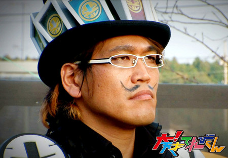
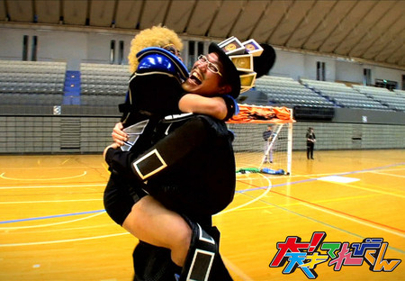

2012年
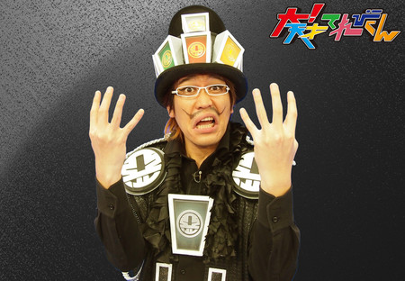

2013年
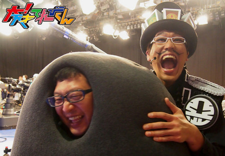
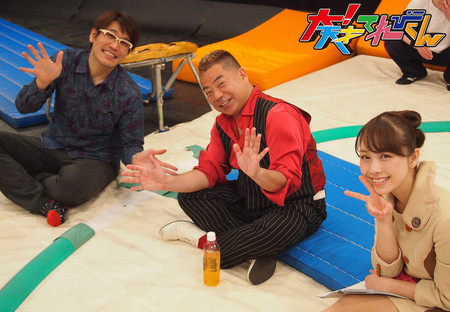
投稿者:古坂大魔王 | 投稿時間:18時00分 | カテゴリ：We are 大天才テレビジョン | 固定リンク
" title="ソーシャルブックマークについて">
※NHKサイトを離れます。
【私と「大！天才てれびくん」】木島杏奈
★私と「大！天才てれびくん」★
「大！天才てれびくん」をいつも見てくださっているみなさん！
こんにちは！！
木島杏奈です^^
私は2011年度てれび戦士として、
1年間ボスとアッキーのもとで、出川イズムを学んできました！！
初めは訳が分からず、部屋に連れられたら、
綺麗なお姉さん（アッキー）が居て、
そしたら、いきなり壁を破って出てくるお兄さん（ボス）。。
初めは理解するのに時間がかかりました！^^
たくさんいろいろな事をして、全力で正面からぶつかり、でもいつも空振りで時々ヒットする！
そんな毎日を、大！天メンバーで過ごして、いつの間にかたくさんの力が身につきました！
一番の思い出は、最後にした大縄跳びです！
最後に、みんなが1つになって挑戦した、この企画。
やってる時は、みんなで飛びきることだけを考えて、励まし合って挑戦した。
成功はできなかったけど、みんなで助け合って挑戦できたことがすごいこと！！
それもまた学びました！！
そんな毎日を一緒に過ごしてきた、てれび戦士のみんな！
初めて会う時は、みんなぎこちなくて、
きっとそんな空気をとりたくて、
私が、初めてみんなに喋った言葉は
"タメ口でいいよ！"
みんなのリアクションは
"あ。はぁー。。？"
ポカ〜んとしてました^^
きっと変な人だなって思われてたかもしれないです！
でも、次の日には、みんな何十年も一緒に居たかのように仲が良くてハシャギ合って。。♪♪
今では、お互い励まし合って一緒に成長する。
みんなで第2の学校だね！っていってたよね。
でも私は、第2の家族だと心から思います（＾−＾）
そんな私たちを、いつもまとめてくださったアッキーは、
いつもみんなの遊びに全力で一緒に居てくれて、私の憧れのお姉さんです！（←アッキーには言ってないんですけど^^）
実はよく、アッキーと寿々歌と朱里と当時中学生だった私でガールズトークもしてたんですよ♪♪
時々、ボスも入ってきましたが笑
そんなボスは1番心の熱い人！
ボスに何事にも全力で、ポジティブになる心を教えてもらいました！
撮影でも、プライベートでもとても優しい方です！
そして、いままで「大！天才てれびくん」を見てくださってきたみなさん。
本当にありがとうございました！
テレビを通して何か伝わるものがあれば、私は嬉しいです！！
「大！天才てれびくん」で過ごした日々は私の宝物です！
大！天ファミリー大好きです！！！^^
2011年
 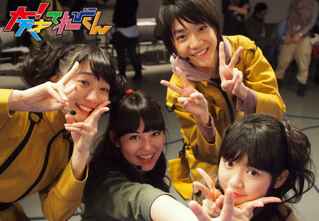
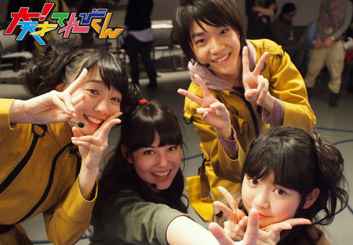
2013年
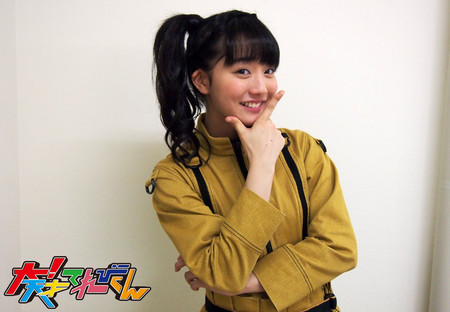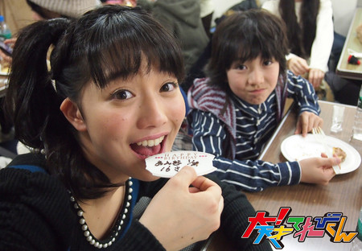
投稿者:木島杏奈 | 投稿時間:18時00分 | カテゴリ：We are 大天才テレビジョン | 固定リンク
" title="ソーシャルブックマークについて">
※NHKサイトを離れます。
【私と「大！天才てれびくん」】矢部昌暉
★私と「大！天才てれびくん」★
どーも！
矢部昌暉です！！
みなさんお久しぶりー♪
久しぶりに、天てれに戻ってきました！
僕が天てれを卒業して、もうすぐ2年が経とうとしています・・・
なんか、時間の流れが早いなー笑
僕は今DISH//というグループで頑張っていますが、
今の僕があるのは、全部天てれのお陰です！！
天てれで、普段できない経験をさせてもらい、
色んな事にチャレンジできたからこそ今があります！
そして何より、他のてれび戦士や共演者の方々との1日1日が、
すごく楽しくてとても大切な思い出です！
まるで家族のように、みんな仲良くてすごい絆で結ばれてます！
みんなで力を合わせて頑張ってきた日々を思い出すと、
どんなにつらいことがあっても乗り越えられるんです♪
今回の撮影で、現てれび戦士のメンバーとは、
ほとんどが初めて会う子たちだったんですけど、
すぐに仲良くなって撮影中も、わちゃわちゃうるさいわけで、笑
それがまた楽しくて、当時の事を思い出しましたね、笑
できることなら、あの頃に戻りたいよ…笑
と、まぁ、何回も書きますが
てれび戦士との出会いや、天てれでの出来事が、今の僕の力の源です！
これから先、僕は自分の決めた道を突き進んでいきます！
でも、天てれでの思い出は、この先忘れることは絶対にないでしょう！
天てれや応援してくれる方々を胸に、これからも頑張っていこうと思います！
最後まで見ていただきありがとうございます！
それではこの辺で。
天てれ最高！！！！
2011年

2013年
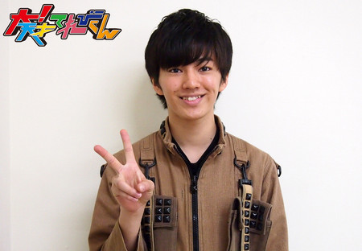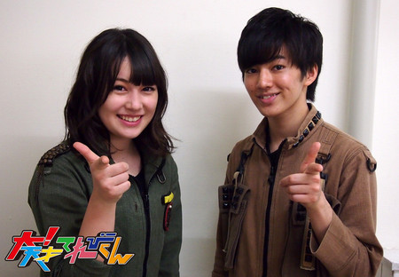
投稿者:矢部昌暉 | 投稿時間:18時00分 | カテゴリ：We are 大天才テレビジョン | 固定リンク
" title="ソーシャルブックマークについて">
※NHKサイトを離れます。
【私と「大！天才てれびくん」】浅賀玲音
★私と「大！天才てれびくん」★
こんにちは！浅賀玲音です。
2011年度から2012年度まで、てれび戦士をやらせていただきました。
天才てれびくんは小さい時からずっとテレビの前で、
憧れのまなざしで見ていた番組だったので
まさか自分がてれび戦士になるなんて夢にも思っていませんでした。
初めの頃は緊張して、何がなんだかわからないうちに収録が終わっていたり（笑）
みんなと打ち解けるのに必死だったり、
収録でうまくいかないことがあったりと、
とにかく慣れるのに必死だった覚えがあります。
その中でも、憧れのMTKをソロでできた時には、最高に嬉しかったです！
そんな風に1年が過ぎて、2年目に入り、
今度は自分が新しいてれび戦士たちの先輩という立場になることに、ワクワクしながらも、とても不安でした。
けれど、2年目は全体が打ち解けるのが本当に早くて、
かなり最初からみんなと濃く絡むことができて嬉しかったです！
あとはやっぱり同い年の崚行、寿々歌、朱里の存在が
めちゃくちゃ大きかったかなぁーという気がします。
3人がいたから、ここまで頑張れたって言っても過言ではないです！
とにかくこの番組での出逢いは、一生ものだと思いました。
全ての出逢いが自分にとって刺激的で、大切で。
出川さん、
あきえさん、
てれび戦士のみんなに、
そして、
「大！天才てれびくん」に出逢えて、本当に良かったです！
2011年

2012年
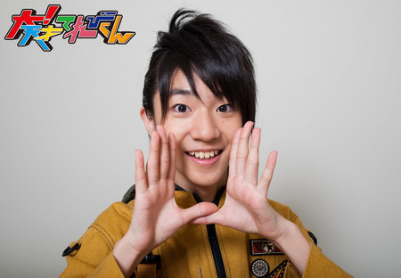
2013年
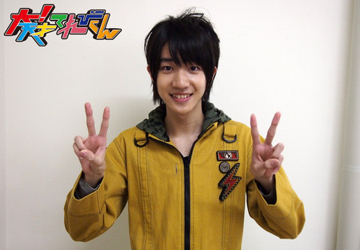
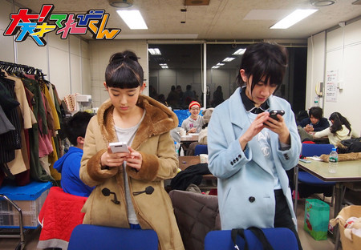
投稿者:浅賀玲音 | 投稿時間:18時00分 | カテゴリ：We are 大天才テレビジョン | 固定リンク
" title="ソーシャルブックマークについて">
※NHKサイトを離れます。
【私と「大！天才てれびくん」】鎮西寿々歌
★私と「大！天才てれびくん」★
みなさん！お久しぶりです！
初めましての方もいるのかな？
改めまして…
西の国支局の鎮西寿々歌です（笑）
「大！天才てれびくん」が始まった時、私は中学1年生でした！
あれからもう3年近く経っているんだ〜早いなぁ〜
一番初め、ボスが紙を破って私達の前に現れた時…
「あ〜テレビでよく見る出川さんだ〜」なんて思っていました。
この時は、まさか、こんなにも滑舌が悪いとは思ってなかったです（笑）
私がてれび戦士になってから、1番心に残っている「出川イズム」は、「ドミノ」です！！
（大！天才てれびくんが始まった1年目に、てれび戦士が4人呼び出されて、
大量のドミノを完成させる！という挑戦をしたんです！）
なぜか分からないけど、私は2回中、2回とも呼ばれました。。
1回目の時はまだ大丈夫だったけど、、
2回目！！！
あの時は、ただただ長時間、長方形の板を並べ続けていました（笑）
そうだ！！！！
私、皆さんに言いたいことがあったんです！！！
私と杏奈が作業中にコーヒーを飲んでいたの覚えていますか？！
（私と杏奈という、ズボラと呼ばれた2人が、みんながドミノを並べている間にコーヒーを飲んでいたんですね）
あの時は、本当にたまたまなんです！！
休憩です！休憩！
短い休憩の瞬間を、たまたまカメラがとらえた！んです！
これを言わないとと、ずっと思っていて、やっとお伝えする時がきたのでよかったです（ホッ…）
でもこのブログ、
ボスが見たら、また言われるので、この辺で終わりにします。笑
とにかく…
私は大！天才てれびんくんのてれび戦士として、12(13)人、の中に選ばれたことにすごく感謝しています。
普通ではできない、いろんな経験ができました。
またいつか、メンバー揃って、皆さんに会えることがあったらいいな。。
そのために、私も頑張ります！！
今まで大！天才てれびんくんを見てきてくださった皆さん！
ありがとうございました！！！
最後に…
スパッツタイツレギンスー！
（私のよくウケたギャグです。）
2011年


2012年
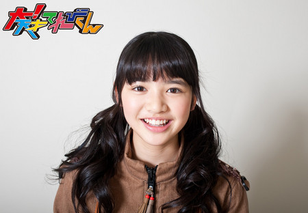
2013年


投稿者:鎮西寿々歌 | 投稿時間:18時00分 | カテゴリ：We are 大天才テレビジョン | 固定リンク
" title="ソーシャルブックマークについて">
※NHKサイトを離れます。
【私と「大！天才てれびくん」】寺田朱里
★私と「大！天才てれびくん」★
「大！天才てれびくん」！
大好きです！
愛してます！
あいらびゅー。
まずは、司会者さんとかもわからない状態で収録を行いましたね〜
最初に、あっきーを見たときは、
あれ！ついにアナウンサー来たか！とか思って、少し興奮しました。
でも話していくうちに、
なんだ、この面白くてやさしすぎる人は！って、もっと興奮しました。笑
そして出川さんが、紙をバリバリ〜ってやってでてきたときは、びっくりしました。
それを見て、この人、変な人なんだな〜とか、お母さん、お姉ちゃんだったかな？と話していたからです。
でも、打ち解けていくいちに、出川さんと、たくさん笑ったりしましたね〜
やっぱり、変わった人でしたね。
でも、世界一やさしい司会者ですよ。ボスとあっきー！
そして、てれび戦士！
2011年度のみんなは、楽屋に入ったとたん、動物園か！ってくらいうるさくて。笑
打ちとけるの、はやっ！ってびっくりしました。
そして、なにより太一と勝から、目が離せませんでした。
えんめいちゃんは、おちゃめで、大人っぽいところもあって、よく追いかけっこしたね。笑
すごく楽しかったです！
ホセ！もう、ほんとにツボです。笑
よく、しりとりしたの覚えてるかな？
大切な思い出です。
ゆい！
ゆいとは、ほんとーにいっぱい色んなことしたよね！
誰よりも周りのことをみて、すごく思いやりがあるなって思いました。
でも、おちゃめなので、とてもかわいいです。笑
勝！勝くん、よく私のスマートフォンで、遊んでましたね〜笑。
おじいちゃんとかよんでいたけれど、やっぱりやさしくておだやかなおじいちゃんです。
太一！めちゃくちゃかわいがりました。笑
追いかけまわしてごめん。でも大好きです。
さびあ！とにかく活発ですね！お人形ごっことかしたね。笑
楽しかったです。
あんな！天然でぬけてるところがあって、おもしろくてやさしいギャップ、萌え〜（ハート）
大好きです。お世話になりました。
やべっちは、ギャグ線たかい！身長も高い！
何もかも、ビッグです！たくさん迷惑をかけました。
しゅんや、シャイでからかうとすぐ赤くなる。
なのに、人をからかうときも、なぜか、恥ずかしそう。笑
ニイナ！しっかりしていて、天然。笑
そんなニイナが大好きです
ソーズビー！あなたも私のツボです。笑
面白すぎます。笑
つかぽん、やさしい一面がありますね。
面白さも、肌のきれいさも、誰にも負けないね、笑。
みれな！
小顔で、目がおっきくて！お人形さんみたいやわ！
でも、すこしガサツなところがありました、笑。
とうこ！全く心がよめません、笑、ミステリアス！
でも、すごくやさしいよね。
短い間だったけど、気さくに話かけてくれた2013年度のみんな。
ありがとう！
古坂さんや、辻さん、ワルドーナや、悪正、
ふかわさん、会長さん、スタッフさん、我修院さん、
山本さん、チャンさん、馬場園さん、武田さん、
鈴木史朗さんや、ゲストで来てくださったみなさま、
たくさんの笑いや、やさしさをありがとうございます！
そして、最後に、ちゅーにーず。
一番、迷惑かけたし、お世話になりました！
たぶん、これからも縁が切れることはないと思います。
癒されたいなと思ったら、連絡するから、そのときはよろしく！笑
なんか、思い返してみると、
無駄なことなんて一つもなくて、ひとつひとつが大切な思い出です。
ファンの皆様との交流も、大きな大きな力となりました。
とにかく、みなさんに、ありがとうが伝えたいです。
ありがとう！
皆！また、どこかで会おう！
あかり
2011年


2012年


2013年
 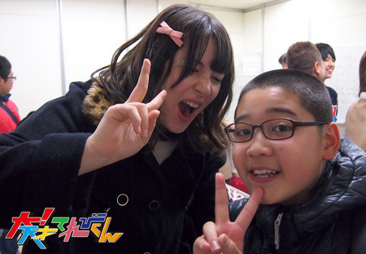
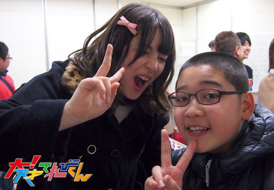
投稿者:寺田朱里 | 投稿時間:18時00分 | カテゴリ：We are 大天才テレビジョン | 固定リンク
" title="ソーシャルブックマークについて">
※NHKサイトを離れます。
【私と「大！天才てれびくん」】長江崚行
★私と「大！天才てれびくん」★
お久しぶりです、長江崚行です。
こうやって、大天ブログを更新するのも、1年ぶりなんですね…。
とても懐かしい。笑
僕は、4年間『天才てれびくん』シリーズに出演させていただいて、
『大！天才てれびくん』には、2年間出演させていただきました！
卒業後も、この前のバラエティコーナーやドラマコーナーのように、
出演させていただけて、本当に嬉しかったです。
よし、そろそろ敬語やめます。笑
久々すぎて、妙にかしこまっちゃう。笑
この前のバラエティコーナー、久々みんなに会えて嬉しかったなー…
大して活躍もしなかったけど…笑
武井壮さんとのパネルを打ち抜く対決の時なんで、
助っ人にきた昌暉・玲音・俺で、
『ノーコンだよ…やばいよ…わざわざ呼んでもらったのに…笑』
って、ずっと話してた。
ええ、言い訳みたいだよね。
言い訳ですよ。笑
ま、楽しんでたしいいよね！笑
あと、ちゅーにーずが、久しぶりに揃ったんだ！
卒業後、初かな。4人が揃うのは。
楽屋で、4人で話したりしてると、すごく懐かしくて…。
一生、こんな関係が続けばいいなって思った。
笑い話もしたし、真面目な話もしたよ。
今回みんなに会えたことは、これからも頑張れる動力源になった気がする。
卒業して一年が経ちました。
僕は、僕の道を駆け抜けています。
これから先、皆が駆ける道と交わるように、頑張ろっと！
それでは、長江、失礼しますね。
これからも、よろしくお願いします！！
長江崚行より
2011年
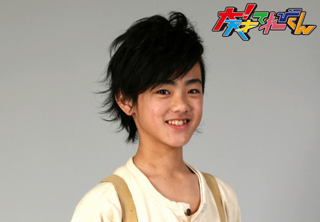
2012年


2013年


投稿者:長江崚行 | 投稿時間:18時00分 | カテゴリ：We are 大天才テレビジョン | 固定リンク
" title="ソーシャルブックマークについて">
※NHKサイトを離れます。
【私と「大！天才てれびくん」】金子隼也
★私と「大！天才てれびくん」★
僕は小さい頃から「天才てれびくん」を見るのが楽しみでした。
テレビの中でキラキラ輝いているてれび戦士たちは憧れの存在でした。
木曜日には僕の家にもてれび戦士がサプライズで来てくれるかなって
ワクワクしながら見ていたのを覚えています。
サッカー一色で演技も歌もダンスも未経験の僕にとっては大きなチャレンジで、
「てれび戦士」になった時は本当に信じられませんでした。
緊張して行った初日。先輩てれび戦士は温かく迎えてくれて、
仲良くなるのに時間はかかりませんでした。
出川さんも、あきえさんも、スタッフさんも優しくて、てれび戦士と一つの家族のようでした。
夏イベや冬イベでは長い稽古を積み上げて、
舞台から客席のみんなの笑顔を見れた事は本当に感動しました。
てれび戦士でさせていただいた経験は僕のこれからの人生において宝物です。
大好きなサッカー。
「フダケリ」に出れると聞いた時は夢のようでした。
サッカー選手に憧れるサッカー少年そのままでした。
「改造計画」も「シャイ番長」も未熟な僕をそのまま受け止めてくれました。
出来ない事がダメではないんだと、自分の全力を出してぶつかればいいんだと教えてくれました。
すぐに変われる魔法はありません。
でもそういう気持ちが少しずつ自分を動かしていくんだと思います。
苦手だった歌もダンスも今は「大好き」と言えるようになりました。
そして嬉しいときはもちろん、どんな時も振り返ればてれび戦士がいて、あっきーがいて、ボスが笑ってくれています。
みんなと一緒にいるのが楽しくて、楽しくて、一生忘れられない思い出。
自分にとってかけがえのない存在です。
たくさんの皆さんに見守ってもらった「大！天才てれびくん」はバトンを渡します。
2013年度、そして「大！天才てれびくん」最後の生放送ではこれまでの感謝の気持ちを伝えました。
2年間本当に応援、ありがとうございました。
2012年
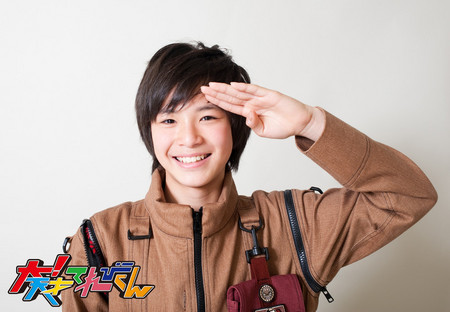
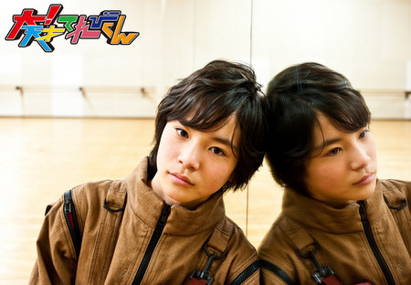
2013年
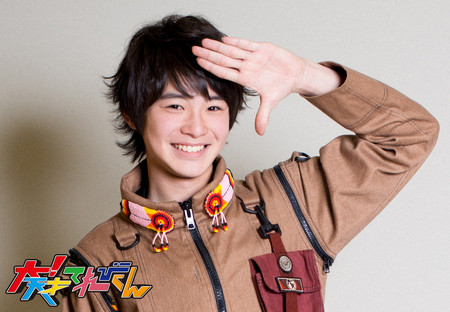
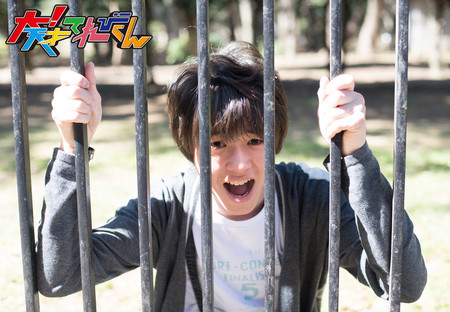
投稿者:金子隼也 | 投稿時間:18時00分 | カテゴリ：We are 大天才テレビジョン | 固定リンク
" title="ソーシャルブックマークについて">
※NHKサイトを離れます。
【私と「大！天才てれびくん」】長谷川ニイナ
★私と「大！天才てれびくん」★
「大！天才てれびくん」
私は、この番組が大好きです！
てれび戦士になる前も、なった後も。
天てれは、小2の頃から見ていたので「てれび戦士」のキラキラしている姿に憧れてました。
だからといって「てれび戦士」になったといっても、
自分は、そんなキラキラしているとは思えませんが、
毎回の収録は、時間も忘れるほど、本当に楽しかったです！！
私の場合、人見知りなので、
初めて、てれび戦士、ボス、あっきーと会った時は、
緊張しすぎて、手の汗を拭いても拭いても、スゴかったです(笑)
そして、それから、4ヶ月ほどは、
正直に言うと、てれび戦士の中に入れていない気がして不安でした。
何を、みんなで話せば仲良くなれるのかなぁとか、
そういうことを、いつも考えて過ごしてました。
本当に「人見知り」って困るんですよね〜(笑)
でも、その期間もあったからこそ、今、こんなにも仲良くできているのかなと思います！！
今は、毎日とっても楽しいです！
そんな「てれび戦士」との思い出たくさんありますが、
絶対忘れられないのが、冬イベの前日の夜です！！
ボス、あっきーも含め、私の部屋で全員、明日の意気込みについて話していました。
いつもなら、そんな時、遊んで盛り上がるのですが、今回は違いました。
事前に書いていた誰からなのかも分らない手紙を
シャッフルして、読み合うということをしたのですが、
全員の明日への意気込み、今、感じていることは、なぜか同じで、
やっぱり「大！天」は、みんなひとつなんだなと思います。
その後、1人づつコメントを言って、でもそうしていくうちに、
1人泣いて・・・。
1人泣くと、天てれでは感染病のように、どんどん広がってしまいます・・・。
最後のボスがコメントをいう時は、15人全員が泣いてました。
客観的に見ていると、まだ始まってもないのに、感極まりすぎだろ！と
ツッコミたくなりますが(笑)
まだまだできるという悔しさと、明日頑張るぞという気持ち、
明日で、もう終わってしまう悲しさが同時にきて、
泣いてしまったんだと思います(汗)
そんな「大！天才てれびくん」も、もうすぐ終わってしまいます。。。
「大！天」は、本当にそのままの自分を出せて、思ったことも言えて、、、最高です！！！
自分が今、こうして、てれび戦士として活動できるのも、いまだに信じられないですが、
12人のてれび戦士、ボス、あっきーといられて、私は、とっても幸せ者です！
そして、ここで皆さんと出会い、「てれび戦士」として活動でき本当に良かったです。
今まで経験したことのないこともでき、色々な意味で成長できました！
大！天！ブログの読者の皆さんも、ここまで応援して下さってありがとうございます！
「大！天才てれびくん」
私は、この番組が大好きです！
長谷川ニイナ
2012年
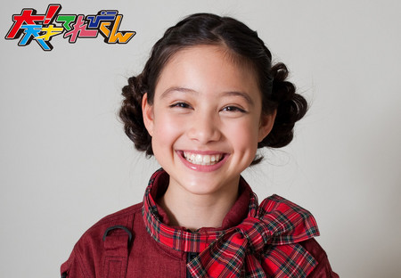

2013年
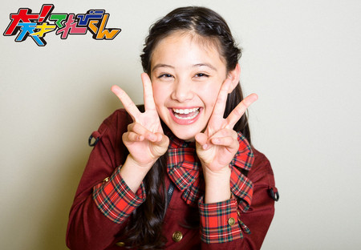
 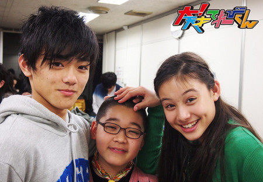
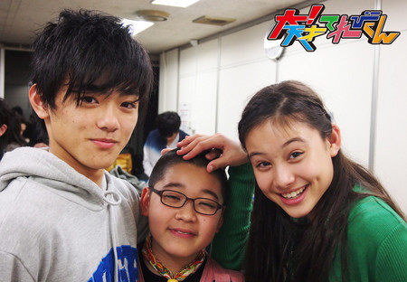
投稿者:長谷川ニイナ | 投稿時間:18時00分 | カテゴリ：We are 大天才テレビジョン | 固定リンク
" title="ソーシャルブックマークについて">
※NHKサイトを離れます。
【私と「大！天才てれびくん」】ファデン咲美亜
★私と「大！天才てれびくん」★
てれび戦士になって、
自分は、いい思い出をたくさん作れたと思います。
MTKや、ごちそうon the earthも、
すごく楽しくて、一生忘れません。
一番最初の収録は、知らない人がたくさんいましたが、
最後は、家族になり、1つになったと思います。
まさに、「started off as strangers, but ended as a family」
今でも、Start lineを聞いて、元気が出ます。
杏奈ちゃんと一緒に練習したことも忘れません。
「自分は、あきらめずに前に進む」
それが、てれび戦士に教えられたことです。
舞台の上に立ち、世界の中で限られた人しかできないことをして、私はラッキーだと思います。
「笑う時は、みんなで笑い、泣くときは、みんなで泣く」
てれび戦士は、いつまでたっても、1つに結ばれています。
2011年
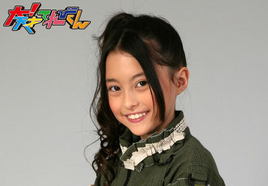
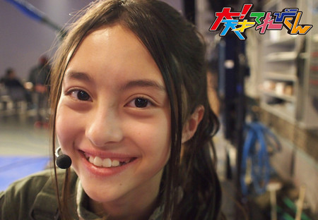
2013年
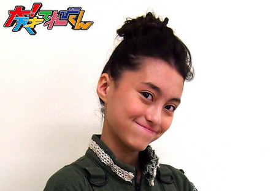
投稿者:ファデン咲美亜 | 投稿時間:18時00分 | カテゴリ：We are 大天才テレビジョン | 固定リンク
" title="ソーシャルブックマークについて">
※NHKサイトを離れます。
【私と「大！天才てれびくん」】岡田結実
★私と「大！天才てれびくん」★
家族みたいなもんで、今回終わってしまうのが、スゴく悲しいんですが、
色々なことを学ばせてもらい、本当に本当に楽しかったです。
てれび戦士みなともに成長でき、助けあって最高の家族です。
「大！天」は、私をそだててくれた大切な番組で、
天てれに出会っていなかったら、今の私はいないと思います。だから、絶対に忘れないです。
人生の中では、短いものだけど、最高でした。
最初終わるってきいた時、ドッキリかと思いました。
そのぐらい信じられなかったです。
ほんねを言うと、もう少しやりたかったなって思います。
でも、後悔はありません。
おうえんしてくれたファンのみなさま、心の底からありがとうございました。大好き☆
これからも、よろしくおねがいします！
スタッフさん、いつも助けてくれたり、オモシロイ天てれを作ってくださってありがとうございました。
てれび戦士のみんな、本当に大好き。
今までありがとう、これからもよろしく（＾ｕ＾）
ボス、あっきー、お父さん、お母さんみたいなそんざいで大好き☆
今まで、感謝でいっぱいです。
本当にありがとうございました(@^^)/~~~
「大！天」最高〜〜〜〜〜〜〜☆
2011年
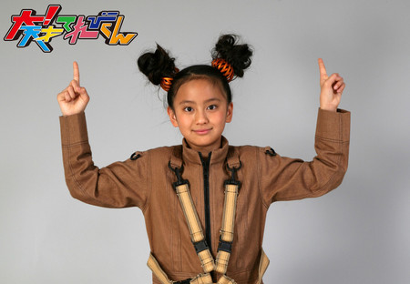
2012年
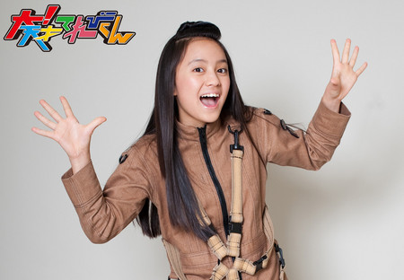
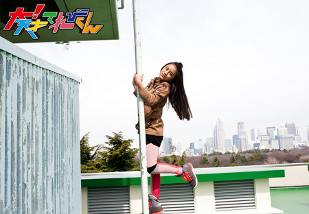
2013年
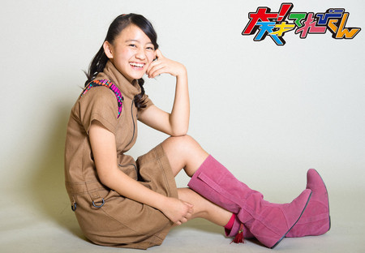

投稿者:岡田結実 | 投稿時間:18時00分 | カテゴリ：We are 大天才テレビジョン | 固定リンク
" title="ソーシャルブックマークについて">
※NHKサイトを離れます。
【私と「大！天才てれびくん」】勝隆一
★私と「大！天才てれびくん」★
「大！天才てれびくん」、は僕にとって初めてのバラエティー番組でした！(o^^o)
バラエティーをよく知らなかった僕にとっては未知の領域?? 笑
…のようでした 笑
3年前に、この番組と出会ってから、ずーと僕の生活の一部みたいで…
みんなとは家族のようでした…泣
僕にとって「大！天てれびくん」は、「欠・か・せ・な・い」存在でした！
出川さんやあきえさんとの出会い……本当にいろいろ、勉強になりました。泣
いつもいつもフォローしてもらってばかりで…笑
それにそれに、個性豊かなてれび戦士みんなとの共演、これも素晴らしい思い出です！
笑いあり涙あり、時にはライバルとして、時にはパートナーとして…。
その一つ一つを思い出すと、涙が………笑
また、スタッフの皆さんには、たくさんの珍しい体験をさせてもらいました！
本当に感謝、感謝です。( ´ ▽ ` )
「大！天才てれびくん」での経験は、一生の宝物です(￣▽￣)
この経験をもっと生かして、さらに飛躍していきたいと思います。^ ^
そして何よりも、「大！天才てれびくん」を支え、応援してくださったファンの皆様、
「大！天才てれびくんの放送は、皆様のものです！」笑
3年間「大！天才てれびくん」を応援してくださった皆様、本当にありがとうございました！
皆様、またお会いしましょう?！(⌒▽⌒)
2011年
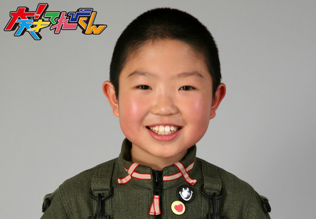
2013年
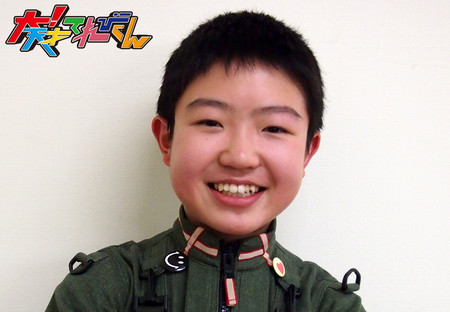
投稿者:勝隆一 | 投稿時間:18時00分 | カテゴリ：We are 大天才テレビジョン | 固定リンク
" title="ソーシャルブックマークについて">
※NHKサイトを離れます。
【私と「大！天才てれびくん」】島田太一
★私と「大！天才てれびくん」★
はい、どうも、何年経っても島田太一です。
僕は、「大！天才てれびくん」が始まった時に、てれび戦士にはいりました。
最初は、（きれいなお兄さん、お姉さんがいっぱいいるー）と思いまして、とても緊張しました。
そんなド緊張している自分を、
周りの先輩に、やさしく声をかけてもらって、話をして、
『てれび戦士』というものは、めっちゃくちゃ楽しいということがわかりました。
そこから、1回目の撮影する現場に皆ではいったら、可愛い女の人が！！
鈴木APでした。
そして、撮影が始まり、内容は、出川特命Pに初対面しました。
声が大きくて、甘噛みもいっぱいして、テレビのまんまだぁー。と思いました。
その後に、これから1年一緒に過ごしていくメンバーで、カレーを向き合って食べました。
その時も、先輩の方からお話してくれて、こんなに楽しくて、面白いものは無いっ！！
しか、思いませんでした。
それから、いろんな撮影をしていって、
楽屋にいる時も、スタジオにいる時も、皆で楽しく過ごして。
みんなとお別れして、一人になった時も、
ずっと、てれび戦士のことをずーっと考えて、ニコニコハッピーでした。
いろんな先輩が、僕のことを可愛がってくれてるーって。
すごく楽しかったー。（涙）
そして、2012年度、2年目。
今まで一緒にやってきた仲間が減って、新人さんがはいってきました。
事前に聞いてはいたのですが、実感がわかなくて
いざ、顔合わせの時、ハンパじゃなく悲しかったです。
旧人だけで、別室にいた時、
先輩に「今までやってきた仲間が減っちゃったけど、大丈夫？頑張ろうね！！」
その声を聞いたとき、悲しみがMAXにあがって、号泣しちゃいました。
寂しくて、寂しくて。
全然涙が止まらない自分を、先輩が、はげましてくれました。
そこで、自分は2年目。
いつまでも、後輩でいられないっと思いつつ、寂しいという気持ちが、まだ高くて、涙は止まりませんでした。
そして、顔合わせは、半分くらい泣いて、あんまりいませんでした。
そこから、徐々に慣れていき、1発目の撮影。
な、なんと、立ち位置が後ろの列ー。
ちょっと先輩の実感を感じました。
そして、無事に1発目の撮影が終了。
その他の数々の撮影していく時や、楽屋などで、
2年目の先輩らしいことは、、、
出来ませんでした。
普通に先輩にばっか頼って、生活していました。
ボスや、鈴木さんとも、変わりなく過ごしていきました。
てれび戦士の仲の良さも相変わらずで、遊んだりして、順調に撮影をしていき。
仲が良いまま過ごして7月、夏イベに向けての練習がスタートしました。
だいたい、2、3週間毎日練習したのですが、めちゃめちゃめちゃ楽しかったです。
ダメ出しや、居残り練習もさせられて、大変だったけど、
てれび戦士のハッピー度が勝って、ツラいと思った事は無かったです。
そして、本番も成功！！
ワイヤーで宙を舞うのも大成功しました。
あぁ、楽しかったなぁーーー。
てれび戦士の絆も、より強く、深まりました。
絆も深まったまま、変わらず、楽しく生活していって、
2012年度も終わるシーズン。
色々、最後のものを撮り終わりました。
そのときは、卒業するのが、中2の4名。
本当に2012年度、最後のものを撮り終わりました。
楽しくワイワイすることも出来ないんだなぁ。
1度、仲間の卒業を見たので、どれだけつらいっていうのが分かってました。
ほんで、お別れのとき。
「おつかれ様でした」
その一言で、離れました。
その時は、全く別れるっていう実感がなく、また来週も会えると頭のどこかで思ってました。
3年目
2013年度。
新人さんが4人入ってきました。
入ってきた4人含め、
みんなでしゃべって、仲良くしていこうってなってる時
何か物足りない感じが、ずっとしてました。
ずーっとモヤモヤしていて。
気付いたんです。
もう先輩は一人しかいない。
物足りないモヤモヤは先輩の存在でした。
入った当初は、先輩が7人いました。
2年目で、5人。
3年目では1人になっていました。
今までは、先輩に頼って、甘えて、楽しく過ごしました。
先輩っていう存在があるときには、
そこが、フラットな状態なので、分からなかったんですが
卒業して、分かりました。
先輩っていうのは、自分にとって、とってもとっても大きい存在っていうことが。
そんな不安に耐えながら、生活しました。
とはいうもの、先輩がいない生活にもすぐ慣れました。
そして、相変わらず、ワイワイキャッキャッ楽しい日々でした。
隠し芸や、夏合宿なども、楽しく成功し、盛り上がりは、右肩上がりでした。
そして12月。
1月11日に向けての、冬イベ稽古が始まりました。3度目です。
もう全体的に雰囲気も分かります。
その毎日の稽古。これが、また楽しくてしょーがない。
前回同様、ツラいことも、楽しく感じてしまう。
そして、もうゲネプロ？はやっ！！
え？もう本番？という感じでした。
あっちゅーまでした。
その後に、すぐ「宝のアリカはQuestion」の練習がありました。
冬イベで、絆が強まっているので、すごく楽しかったです。
レコーディングも無事に終わり。
またまた、次は、最後の生放送への練習。
トランポリン、ダンス、歌を頑張りました！！
3年間、
色々な濃厚で楽しくて、楽しくて、楽しくて
蝶ネクタイつけて、先輩に甘えて
たまに自分が先輩になって、遊んで、絆深めて、笑って、泣いて、照れて、
色々な気持ちで表情に出て、ツッコまれて、笑われて。
宙に舞ったり、ボール蹴ったり、悪くなったり（ワルワル）
乗り物たーくさん乗ったり、
早口言葉言ったり、歌ったり、おどったり、
写真撮ったり、ブログ書いたり、ギャグしたり、人の話を聞いたり
もーーーーーーーーー
全て、楽しかった楽しかった楽しかったーーーーー。
表しきれない。
この素晴らしさ。
戻れるなら、戻りたい
「新小学生5年生の島田太一です。これから宜しくお願いします。」
っていってる時に。
まだ何もわからない状態で、そこから徐々に考えて、学んで、成長して、
笑われて、転んで、学んで、。
速すぎる、3年経つのが、速すぎる。
何もかも、全て、1から∞まで、楽しかった。
すごいハッピーだった。
そんなハッピーな「大！天才てれびくん」に関わった関係者の方々
てれび戦士、MC陣、場所、物、全てに感謝したい。
自分が「てれび戦士」として過ごしてきて、最高でした！！
おにぎり1号 島田太一
2011 年
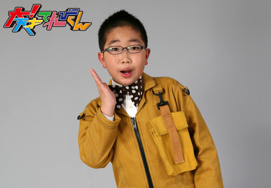
2012年
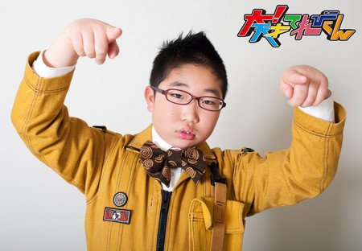
ｻｿｻｿ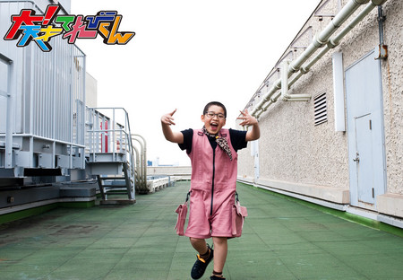 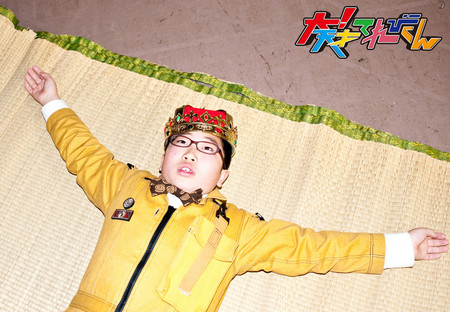
2013年
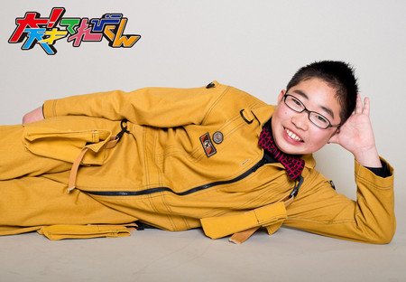
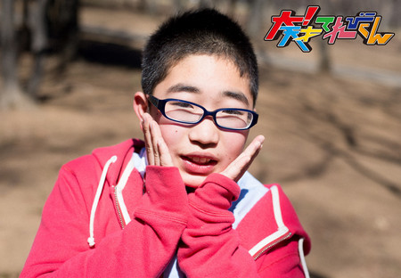
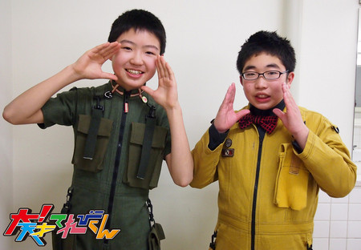
投稿者:島田太一 | 投稿時間:18時00分 | カテゴリ：We are 大天才テレビジョン | 固定リンク
" title="ソーシャルブックマークについて">
※NHKサイトを離れます。
【私と「大！天才てれびくん」】ソーズビー航洋
★私と「大！天才てれびくん」★
うーん、
まず小学生の頃とは全く変わりました。
自分で言ってしまいますが、
僕、小学4年生ころまで、
空気読めなくて、いばってて、勘違いしていて…
と、本当に最低な人間でした。
でも、あることをきっかけに、
将来的にも、今の自分のためにも変わらなきゃ！と思い、
いろいろな自分の悪いところを変えたりしていました。
割と前よりは大分よくなって、
「いい感じになってきたかな？」と、思ったときに、
天才てれびくんの、「てれび戦士」として入りました。
周りの先輩や、中学生などは、みんな僕よりもしっかりしていて、
自分だけじゃなく、人のためにも、ものすごく深く考えたり、
お互いの悩み事も、深く掘り下げてくれて、
それを踏まえての、納得のいく相談の答えも教えてくれて、
僕の「いい感じになってきたかな？」のランクを、遥かに超えていて、
すごく憧れた？焦りを感じた？のを覚えています。
そうしていままで、みんな、いろいろなことを教えてくれたり、
いろんな、みんなのいいところを自分の中で盗んだり…と、
いろいろな学びを得て、てれび戦士になる前の自分の周りが180度変わり、
僕からの相談を素直にきいてくれる子がいたり、
相談をしにきてくれる子がいたりと、
自分が変わると、こんなに自分の周りも変わるんだ！と、きづきました！
学びました！
感じました！
今でも、なんであんなきついことを言ってしまったんだろうとか、
もっとこうしてあげればよかったとか思ったりもして、
てれび戦士のみんなに申し訳ないな、と思うことがたくさんあるんですけど、
そんな悪い自分をきづくことさえできなかった自分を、
きずくようになれたのも、天才てれびくんに入って得た成長だと思います。
そんな成長をさせてくれたみんなに、本当にお礼の気持ちしかありません。
いろんな出会い
いろんな思い
いろんな経験
いろんな支え
いろんな反省
これ以上にもあるのですが、
今の僕は、全てこの2年間で得たものと言っても過言ではありません。
この環境、仲間、時間、思い出。
本当におじいちゃんになっても忘れないです。
これからも、僕はてれび戦士に永遠に甘えて行くだろうし、
遊ぼーとか
勉強教えてーとか
イタズラとかも、していきそうです。
今も、てれび戦士は、そんな僕を優しく受け止めてくれます。
ほとんどの人にイタズラをして、
めぐたんや、のだしんや、ニイナや、司には、無茶振りばっかりして。
ゆいと太一なんてほぼ毎日悩みを聞いてくれる。
そんなみんなの優しさが、僕には最高の喜びとありがたみでいっぱいです。
倍返しじゃ済まないほどです！
これ以上に今まで人のことを思ったこともないし、
心の底から大事にしたいと思うことはありませんでしたし、これからもなさそうですorz
ボス、アッキー、てれび戦士には大きな感謝をしています！
本当に本当にありがとう。
そして、これからもよろしく
いつでも、そばにいてくれた。
いさせてくれた。
そんなみんなが大好きです！！
てれび戦士は永遠に。。。
2012年
2013年
投稿者:ソーズビー航洋 | 投稿時間:18時00分 | カテゴリ：We are 大天才テレビジョン | 固定リンク
" title="ソーシャルブックマークについて">
※NHKサイトを離れます。
【私と「大！天才てれびくん」】中里萌
★私と「大！天才てれびくん」★
去年から1年、、、
本当に、びっくりするくらい、あっという間でした、、、。
私は、2008年度から、天てれを、ずーっと見ていて、本当に大好きな番組でした（＾◇＾）。
自分の大好きな番組。
とーっても、あこがれていた番組に出られて、言葉に表せないくらいうれしいです。
入ったばかりの頃、
収録の度に緊張して、NHKに入るのがこわくらいでした。
みんなと仲良くなれるかなー？、、、
話せるかなー？、、、など、
たっくさん心配や不安な気持ちがありました。
けど、みんなと一緒にいて、何回も思ったのが
≪優しぃー≫でした。
私が分からない時、困っている時は、だれかが助けてくれて！^O^
そんなみんなとの楽しい収録、ロケいーっぱいでした。
夏には、大天クエストがありましたね〜♪
もぉ、とにかく皆、おもしろくて、、、(笑)
一緒にいると、たのしーって思いました！
大天クエストの時は、雨が降ってきちゃったり、、、大変なこともあったんですけどっ！！
みんなのパワーで雨もふっとび！！晴れました！！←これには、びっくり(笑)
他にも、15番勝負や冬イベ、など^m^
冬イベは、練習が3週間あり、、、
みんな真面目に(ちょっとふざけちゃったけど(^^ゞ）
頑張りました。
休憩時間は、ボケ＆つっこみしている人がいたり、追いかけっこ？みたいなのをしている人もいる、、、(笑)。
なんか、「てれび戦士」って愉快だなーって思っちゃいました。
ボス、アッキー、
ニイナ、しゅんや、野田しん、
ズビー、太一、ゆい、萌？（笑）、
みれな、とうこ、美晴っち、
つかちゃん、ゆうがくん、延命ちゃん
最高だなぁって、何回も何回も思いました！！
15人のパワーを1つにすれば、何でもできる気がします♪
本当
みんな大好き！
2013 年


※念のためですが、萌とは同級生です。
投稿者:中里萌 | 投稿時間:18時00分 | カテゴリ：We are 大天才テレビジョン | 固定リンク
" title="ソーシャルブックマークについて">
※NHKサイトを離れます。
【私と「大！天才てれびくん」】野田真哉
★私と「大！天才てれびくん」★
あの時の緊張は、多分、一生忘れないと思います。
なんていっても、
いつもテレビの中にいたてれび戦士が目の前にいるから。
最初はどうなるかと思ったけど、すぐに仲良くなれて、その緊張はとけました。
みんな面白くてしっかりしていて、助けられた場面が多々ありました。
僕は、そんなみんなが大好きです！
隼也とは、いつも2人でふざけあっていた。
時には、みんなにおこられる事もあったけど、隼也といた時間は本当に楽しかった。
ニイナちゃんは、いつも自分の意見を聞いて、いい意見を出してくれた。
ニイナちゃんは、お姉さんの様な存在だった。
結実は、いつも自分が落ち込んでいたりすると、持ち前の面白さで明るい気持ちにしてくれた。
結実には、本当に助けられた。
太一は、おしゃべりな僕の話を嫌な顔ひとつせず、聞いていてくれた。
太一がいると、すごく楽な気持ちでいられた。
ズビーは、お調子者な所があるけれど、いざとなるとすごく心強い。
ズビーは、どんな時も僕の事を心配してくれて、相談にのってくれた、ありがとう。
めぐたんは、すごくおしとやかな所と、面白い所を兼ね備えてた。
でも、何よりも、やっぱり優しかった。いつも優しくしてくれてありがとう。
つかちゃんは、好きな物が一緒で、いつもつかちゃんから話しかけてくれた、
そんなつかちゃんが、今、かわいくて仕方がない。つかちゃんは、弟みたいな存在だった。
美澪奈は、どんな時でも負けず嫌いで、誰よりも頑張ろうという気持ちが強かった。
僕は、美澪奈を見てると、ダメになりそうな時でも、もう一回頑張ろうという気持ちになった。ありがとう。
とうこさんは、同じ名古屋組で地元の話で盛り上がる事もあったし、
疲れた時に、とうこさんと、やんわりしてると落ち着く。とうこさんといると、すごくリラックスできた。
みはるっちは、どんな時でも笑っていた。その笑顔を見てると、癒やされる。
僕が困ってる時は「大丈夫やで。」といって、励ましてくれた。すごく嬉しかった。
ゆうがくんは、自分の世界観をもっている。
稽古などしている時、ゆうがくんは、いつも僕にアドバイスをくれた。自分よりも大人に思える。ありがとう。
延命ちゃんは、最年少ながらも、すごくしっかりしていた。
面白い所もあって、メンタルが強かった。延命ちゃんは、みんなの妹みたいな存在でした。
アッキーは、どんな相談も乗ってくれて、面白い所があって、いつも場を和ませてくれた。
そんなアッキーは、てれび戦士みんなのお母さんのような存在です。
ボスは、いつも、場の空気を変えてくれました。
みんなが落ち込んでいるときは、面白い事をしてみんなを笑わせてくれる。
そんなボスは、てれび戦士みんなのお父さんのような存在です。
このメンバーでやれた事は、奇跡だと思います。
1日生まれる日が違ったら、みんなとは会えなかったかもしれない。
そう思うと、その奇跡に巡り会えた今年のメンバーは、幸せだと思います。
みんなに支えられて送ったこの1年は、僕の一生の宝物です。
2013年
ｻｿｻｿ
投稿者:野田真哉 | 投稿時間:18時00分 | カテゴリ：We are 大天才テレビジョン | 固定リンク
" title="ソーシャルブックマークについて">
※NHKサイトを離れます。
【私と「大！天才てれびくん」】椋木マルティン
★私と「大！天才てれびくん」★
最初の収録の時、前年度のメンバーと違っていて、
みんなと仲良くできるか少し不安だったのですが、
案外みんなと、仲良くできたので良かったです。
そのおかげで、いくつかの思い出ができました。
1つ目は、全員の力で作り上げた2011年度の冬イベです。
毎日のように行われたリハーサルに出て、
厳しい指導もありましたが、それを自分のものにし、
みんな、様々な力を発揮し、みんなが一つになり、
思い出に残るような印象深い冬イベに出来ました。
2つ目は、現役最後に出演した木生です。
「ああ、これでこのメンバーと一緒に出演するのも、最後になってしまうのか....」
と、考えると、
あの時は淋しくて、仕方がありませんでした。
あの最後の木生は、
僕にとって忘れられない木生だったかもしれません。
木生が終わった時には、
てれび戦士一人ひとりがさまざまなな想い出があり、
共に寂しさが湧き出て、泣いてしまいました。
その後、僕はてれび戦士を卒業しましたが、
大天のてれび戦士たちとは、ずっと仲間であると思っています。
2011年
2013年
投稿者:椋木マルティン | 投稿時間:18時00分 | カテゴリ：We are 大天才テレビジョン | 固定リンク
" title="ソーシャルブックマークについて">
※NHKサイトを離れます。
【私と「大！天才てれびくん」】黒澤美澪奈
★私と「大！天才てれびくん」★
私にとっての「大！天才てれびくん」
それは、チャレンジの連続でした。
この２年間、いろいろな事に挑戦させていただきました〜(..)
てれび戦士になっていなかったら
一生、経験出来なかったことも、たくさんあったんじゃないかな？と思うくらいです。
私は、自分の思ってること、感じたことを人に伝えるのが苦手です。
まずは、こんな自分との戦いでした。
ほんと、何も出来ない自分に気づかされました。
あと、自分の殻というか、自分の限界を勝手に決めてしまっていて、
最初は顔に粉がつくのにも、抵抗があったりして
コスプレとか、変装とか…
自分自身でも、このままじゃダメだとは思ってて
でも！
いろいろ経験していくうちに、
その殻を一つずつ破っていくことが、楽しくなってきました。
最後の、ジョーシKINGでは、
『加藤ちゃんぺ』『変なおじさん』『どじょうすくい』など
笑いとは、ほんと縁がなかった私に、大きなチャンスをいただきました。
最初は、恥ずかしさの方が強かったけど
つかちゃんと、スタッフさんのアドバイスを受けて、
自分なりに、やり切りました！
とにかく、みんなに驚いて欲しかったし、
楽しんで欲しかった、笑って欲しかったんです！
ただ、その一心でした。
そうそう、爬虫類もダメだったんです〜(^-^;
でも、昨年のどうぶつカメラのコーナーで、
あかりちゃんと一緒にロケに行って、克服しました。
あかりちゃんのフォローがなかったら、多分、逃げ回っていたと思います。
あかりちゃんの爬虫類への愛が、私を変えてくれたんです！
今なら、どんなロケでも、バンバンいけますよ！
o(^∇^o)(o^∇^)o笑
それから、『乗りすけさん！』
2年間レギュラーで、お世話になりました。
『のりすけ黒澤』って呼ばれるのが、嬉しかったりしてます。
陸上・水上！！！
いろいろな乗り物に乗りました〜
日本の小学生で初めて乗った乗り物、
建築や農業系のお仕事専用の乗り物には、
その職業にならないと普通は乗れないので、
まるで職場体験みたいで、ほんと楽しかったです。
乗り物だけど、単なる乗り物じゃない。
乗り物への想いも、たくさん詰まってるコーナーだったと思います。
そしてMTKも、たくさん歌わせていただきました。
美澪奈は、歌は大好きだけど、正直得意ではありません。
自分の声もコンプレックスだったし、
てれび戦士になるまでは、鼻歌は歌うけど、
人前で歌うことなど、考えたこともなかったんです。
だから、カラオケもあまり行ったことがありませんでした。
そんな私に、たくさんのチャンスをいただきました。
今は歌うことが大好きです！
歌うことの楽しさは、これからも育てていきたいです。
ただ1度だけ、くじけそうになったことがあります。
それは、大！隠し芸大会の『竹馬ダブルダッチ』です！
竹馬に乗るのがやっとなのに･･･
それで縄跳びをするなんて、絶対無理って思っちゃったんです。
でも、そんな美澪奈に、結実ちゃんとメグちゃんは、
『みーちゃんなら出来るよ』
って、励ましつづけてくれたんです。
それなのに、練習しても練習しても、ぜんぜん出来るようにならなくて
美澪奈がくじけそうになってしまった時、
スタッフさんが、竹馬名人をさがしてくれて、指導を受けることが出来ました。
その名人は、美澪奈に合わせた手作りの竹馬を用意して下さって、
本番は、その竹馬を使わせていただきました。
それでも、途中なんども投げ出したくなって、
その度に、結実ちゃんとメグちゃんが励ましてくれて…
ふたりがいなかったら、美澪奈は練習を続けることも出来なかったと思います。
3人で頑張って、成果が出せて本当に良かったです！
あと竹馬の練習を応援してくれていた戦士や
スタッフさんにも、感謝の気持ちでいっぱいです。
みんなの応援もあって、本番でやっと成功したので、
嬉しさも、達成感も、今まで感じたことがないくらいでした！！
そんな私達を、
いつも暖かく見守ってくれていた、ボスとアッキー。
一緒に番組を作ってこれて、
同じ時間を過ごせて、本当に幸せでした。
「大！天才てれびくん』」から
私は、とても大切な宝物をたくさんいただきました。
このメンバーで、笑いながら、
2年間出来た事が、本当に幸せです！
ありがとう！
「大！天才てれびくん」！！
黒澤 美澪奈
2012年
ｻｿｻｿ
2013年
投稿者:黒澤美澪奈 | 投稿時間:18時00分 | カテゴリ：We are 大天才テレビジョン | 固定リンク
" title="ソーシャルブックマークについて">
※NHKサイトを離れます。
【私と「大！天才てれびくん」】竹原司
★私と「大！天才てれびくん」★
僕は、2年間
「大！天才てれびくん」に、てれび戦士として出演させていただきました。
その中で、いろいろな事をランキングにしてみました。
こちらです！
2012年度 収録ランキング！！
第3位・・・ 「ごはんがすすむ○○」の沖縄県のAランチ、すごくおいしくて、びっくりした。
第2位・・・ 木生の高知ロケ！考えて作った、カツオのタタキサンドは、好評でうれしかった。
第1位・・・ 天てれ20周年のスタバラ！初めの言葉と、終わりの言葉をがんばって言ったのが印象に残っている。
2013年度 収録ランキング！！
第3位・・・ チャン錦チャンの錣山部屋での修行で食べた、ちゃんこがおいしかったし、力士の皆さんが、やさしくしてくれて楽しかった。
第2位・・・ スクープ野郎で鹿児島に行って、スーパーおじいちゃんにおどろいた。120キロのボールをうつなんて、むりだよ・・・と思った。
第1位・・・ 最後のスタバラ！3年間のすべてを、このスタバラで、てれび戦士と、ボスと、アッキーでがんばった。
2012年度 てれび戦士との思い出ランキング！！
第3位・・・ 島田君と食べた、卵かけご飯。ライスと卵を買って、島田君と食べた、卵かけご飯はカクベツだった。
（MTKでなく、NHKの食堂での特別な食べ方）
第2位・・・ スリラーをおどったとき、怖くて怖くて泣いていたら、みんながはげましてくれたりして、大丈夫になれた。
第1位・・・ 夏イベのとき、皆で円陣を組んで「がんばるぞ！」と言ったとき、すごく緊張していたけど、がんばろうと思えた。
2013年度 てれび戦士との思い出ランキング！！
第3位・・・ みんなで冬イベの練習をしているとき、アドバイスをしたり、してもらったりして、絆を深めたこと。
第2位・・・ 楽屋で、みんなとしゃべっているときに、本当に楽しいなと思ったとき。
第1位・・・ 冬イベのとき、みんなといっしょに本番でがんばって、最後、がんばったとみんなに言われたとき。
天てれで思ったことランキング！
第3位 『大！天に出れてよかった』
第2位 『本当に本当に楽しい』
第1位 『時間がたつのが、はやい』
ランキングは、以上です。
僕は、この2年間いろいろな人に助けてもらいました。
ボス、アッキー、てれび戦士、スタッフさん、
この2年間、本当にありがとうございました。
そして、これからもよろしくお願いします。
2012年
ｻｿｻｿ
2013年
ｻｿｻｿ ｻｿ
※大天才テレビジョン広報部ブログ班注：上の写真は最後の2月27日、最後の生放送の前日に練習が終わったあと、最後に残って1人残って着替えているところです。
投稿者:竹原司 | 投稿時間:18時00分 | カテゴリ：We are 大天才テレビジョン | 固定リンク
" title="ソーシャルブックマークについて">
※NHKサイトを離れます。
【私と「大！天才てれびくん」】中尾美晴
★私と「大！天才てれびくん」★
てれび戦士に合格して、初めてみんなと会った時の事を、未だにはっきりと覚えています。
そこには、ボス・あっきー・れお君・りょうき君・すずかちゃん・あかりちゃん、
そして、大天メンバーの皆が目の前にいました。
天才てれびくんは、小さい頃から、ずっと見ていたので、
目の前に、あこがれのてれび戦士がいて、ものすごく感動したのを覚えてます。
ボスは、美晴を見た瞬間
「あ！良いオモチャができた！お母さんだ、お母さん」
と言っていました。
その一言でがきっかけで、あだ名が「お母さん」になりました。
ボス・・・ ボスには、いつも
「芸能界では勉強もできるほうがいいよ」と言われています。
なので、文武両道でがんばります。
あっきー・・・ 実は、めっちゃあこがれてるから、
話しかけるのがすごく恥ずかしかったです。
しゅんや君・・・ 東京にいる時は、美晴のお兄さん的存在でした。
2人で、ドラまちがいのお仕事がきた時は、めっちゃうれしかったです(∵)
ニイナちゃん・・・ 初仕事の時、弁当の片づけ方から、マイクのつけ方、
スタッフさんの名前、何から何まで細かく教えてくれました。
太一君・・・ 優しい男子日本一だなと思います。
ソーズビー君・・・ 2人で、よく遊びました！一緒にいてて一番安心できました。
しんや君・・・ オーディションの帰り、偶然、新幹線乗り場で会って
「また会えたらいいね」と言ってたら、本当に会えたのでうれしかったです。
しんや君と同じ年に、てれび戦士になれて良かった。
ゆいちゃん・・・ 美晴にすごく優しくて、お仕事後、いつもほめてくれました。
めぐたん・・・ MTK「マジックアワー」の2人で見つめ合うシーンが好きです。
つかさ君・・・ スクープ野郎の京都ロケは、大変だったけど2人ではげましあって、がんばったね！
あの時は、ありがとう。将来コンビ組もうね。
みれちゃん・・・ 冬イベ一緒に泊まった時、めっちゃ楽しかったです☆
いつも優しくしてくれてありがとう！！
とーこさん・・・ 背が高いの、うらやましい！
美晴が、ごはん食べる量が少なくて、心配してくれてありがとう！！
ゆうが君・・・ ジョーシキングロケの姉弟役楽しかった〜!!
2人で歌を作ったりして楽しかった！
覚えてる？「大天印の健やか牛乳」！
延命ちゃん・・・ 夏合宿一緒に泊まったね。
狭いけど2人で一緒のベッドで寝て安心して寝れたね☆
1年間、あっという間でした。
大阪から東京へかよったり、
受験勉強と冬イベが重なったりで、大変な事もあったけど、
みんなと一緒に、てれび戦士としてお仕事するのは、
そんな事もふきとばすくらい楽しかったです！！
2013年
投稿者:中尾美晴 | 投稿時間:18時00分 | カテゴリ：We are 大天才テレビジョン | 固定リンク
" title="ソーシャルブックマークについて">
※NHKサイトを離れます。
【私と「大！天才てれびくん」】山田陶子
★私と「大！天才てれびくん」★
10年くらい過ぎたような気がするです(゜.゜)
私は、「大！天才てれびくん」に行くとき、新幹線から始まります。
毎回、品川につくと、「帰りたいな〜」って思います。
でも、足は、渋谷に向かいます。
渋谷に着くと、やっぱり、「帰りたいな〜」って思います。
でも、足は、NHKに向かいます。
楽屋につくと、「来てよかったな〜」って思います。
終わって着替えると、
「もうちょっといたいな〜」って思います。
なんざんしょ？(笑)
何もかも初めてづくしの二年間でした。
初めてのオーディション、初めてのテレビの世界・・・。
自分の状況が、よく分かんなかったですな(-。-)y-゜゜゜
でもね♪
最初から、緊張も、知らないこと教えてもらうのも、
全部全部、ただただ面白かった・・・。
てれび戦士との時間は、学校の友達たちと全く違いました。
とにかく、みんな、頭がクルクルまわる。
会話が尽きない、個性的、毒がある（笑）、回転が速い・・・。
ずっとハイテンションで、頭と口を使うのは面白い。
楽屋が一番面白かった♪
それと、今まで会ったことのない大人たちが沢山いました(^○^)！
照明さん、音声さん、カメラさん、衣装さん、メイクさん、制作の人、NHKの人・・・。
髪型も、服装も、話し方も、皆さん個性的♪
皆さん、ちゃんと、私のこと見てくれてました。
つらい時や、頑張ってる時、不安な時、元気をくれました。
そして、やっぱり、出川さんと、アッキー。
嘘がなくて、ほっこりします。
出川さんは、正義の味方！お父さんみたいに私たちを守ってくれます。
でも、疲れて寝てる時は、ぬいぐるみみたいでかわゆすです。
出川さんが寝てる時、こっそり横にいって（ごめんなさい(>_<)）体操座りしてる時間が好きでした。
アッキーお姉ちゃんは、通訳です。
沢山の気持ち吸い取ってくれました。
大人は、すごいです。
本当に、ありがとうございました<m(__)m>
さあ、また、春が来ますよ！
次は、中学生です。
次は、何が起きるかな〜！ワクワクしますな♪
2012年

2013年

投稿者:山田陶子 | 投稿時間:18時00分 | カテゴリ：We are 大天才テレビジョン | 固定リンク
" title="ソーシャルブックマークについて">
※NHKサイトを離れます。
【私と「大！天才てれびくん」】相澤侑我
★私と「大！天才てれびくん」★
僕は天てれのオーディションの時のことを良く覚えています。
1次、2次オーディションの時、のだしんとめぐたんに遭遇。
2人ともオーラが違ったので、「あ、この2人は受かってもおかしくないな」と思いました。
最終オーディションでは、美晴っちと同じグループで遭遇。
スタッフさんに
「2人1組でやってもらいます」
と、言われて作ったペアの相手が、美晴っちだったのです。
合格の連絡が来た日は、偶然にもX'mas。
町にイルミネーションを見に行っている時に嬉しい知らせが届いて、
嬉しくてますますイルミネーションが輝きました。
顔合わせの時に初めて4人で会って、
「あ、やっぱりこのメンバー受かってる」って思って、ちょっとホッとしました。
ここまではオーディションでのお話。
いよいよ、てれび戦士との顔合わせの時。
新人てれび戦士は、ホワイトボードに名前を書きました。
キンチョーして、手が震えました。
いちばん最初の収録で、詩吟、ぐるぐるバット、その後小麦粉に顔突っ込んで………
こんな楽しいことが、これからずっと続くと思うと、ワクワクがハンパなかったです。
こうして、僕のてれび戦士生活が始まりました。
そこから1年、生放送だったり、スタジオパークだったり、文化祭だったり、冬イベだったり…………
いろんなことが経験できた1年でした。
楽しむ時は、みんなで思いっきり楽しみ、悲しい時はみんなで思いっきり泣く。
みんな個性があるからドラマができた。
みんな同じ立場だから冬イベができた。
みんなたくさん笑ったからバラエティができた。
みんなたくさん泣いたから感動できた。
友達以上家族以上。
僕はそんなてれび戦士のみんなが大好きです！
2013年
投稿者:相澤侑我 | 投稿時間:18時00分 | カテゴリ：We are 大天才テレビジョン | 固定リンク
" title="ソーシャルブックマークについて">
※NHKサイトを離れます。
【私と「大！天才てれびくん」】延命杏咲実
★私と「大！天才てれびくん」★
いしょうのポケットの顔も、すっかりなくなり、
大人になったと思う延命です。
私は、てれび戦士として3年間やらせてもらいましたが、
いろいろな思い出が数え切れないほどあります。
文章で書ききれないほど、たくさん思い出がよみがえってきます。
その中でも、3つにしぼって書きますね。
まずは1年目から！
これは、ぜったい最後の収録の時にやった、大なわです。
この時は、小2で、体力も今より全くなくて、
しかも体育ぎらい（このことは、今も変わってません・・・）。
で、いしょうも冬イベのモコモコしたプードルの暑いいしょうで大変でした。
目標だった30回には行かなかったのですが、
助け合い、そして、なによりも
「ぜったい成功する！」という気持ちが、みんなの心をひとつにして・・・
すごく感動するコーナーでした。
次は2年目です！
最後の「すき焼きパーティ」も楽しかったですが、
個人的には、自転車を練習した
「季節外れの卒業式」の企画で自転車を練習したのが心に残ってます。
私のために、みんなおうえんしてくれて・・・
私のためにスタッフさんが自転車を用意してくれて・・・
すっごくうれしかったです。
もし、てれび戦士にならなければ、私は、自転車に乗れていなかったと思います。
本当に、ありがとうございました。
そして3年目は！
てれび戦士22名が、全員集合した最後のスタジオバラエティのリベンジと、新ちょうせんをした
15番勝負の企画、とっても心に残りました。
私が会ったことがあるのは、全員で、楽屋でも思い出話をしたり、おもしろ話をしたり、いい話も・・・いろんな話をしました！
大なわも、ふせんの新ちょうせんも、ピンポン玉を、はしでつかむという2人のリベンジも、全部感動したし、笑ったりしました。
このように、いろんなことを学んだりして、とても楽しい、「大！天才てれびくん」でした！
2011年

2012年
2013年
投稿者:延命杏咲実 | 投稿時間:18時00分 | カテゴリ：We are 大天才テレビジョン | 固定リンク
" title="ソーシャルブックマークについて">
※NHKサイトを離れます。
ページの一番上へ▲


{kind=link}
{kind=link}
{kind=link}
{kind=link}
{kind=link}
{kind=link}
{kind=link}
{kind=link}
{kind=link}
{kind=link}
{kind=link}
{kind=link}
{kind=link}
{kind=link}
{kind=link}
{kind=link}
{kind=link}
{kind=link}
{kind=link}
{kind=link}
{kind=link}
{kind=link}
{kind=link}
{kind=link}
{kind=link}
{kind=link}
{kind=link}
{kind=link}
{kind=link}
{kind=link}
{kind=link}
{kind=link}
{kind=link}
{kind=link}
{kind=link}
{kind=link}
{kind=link}
{kind=link}
{kind=link}
{kind=link}
{kind=link}
{kind=link}
{kind=link}
{kind=link}
{kind=link}
{kind=link}
{kind=link}
{kind=link}
{kind=link}
{kind=link}
{kind=link}
{kind=link}
{kind=link}
{kind=link}
{kind=link}
{kind=link}
{kind=link}
{kind=link}
{kind=link}
{kind=link}
{kind=link}
{kind=link}
{kind=link}
{kind=link}
{kind=link}
{kind=link}
{kind=link}
{kind=link}
{kind=link}
{kind=link}
{kind=link}
{kind=link}
{kind=link}
{kind=link}
{kind=link}
{kind=link}
{kind=link}